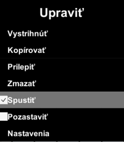
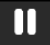
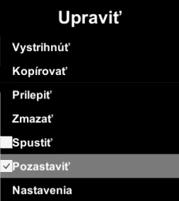
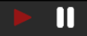
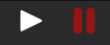

Spustenie simulácie
Každá simulácia v nástroji má dva stavy:
- Spustená
- Pozastavená
Spustenie simulácie
Na spustenie simulácie, urobte jeden z nasledovných krokov:
- Stlačte tlačidlo šípky (spustiť) v hlavnom panely nástrojov.
- Stlačte na položku spustiť v položky Upraviť v hlavnom menu.

Pozastavenie simulácie
Na pozastavenie simulácie, urobte jeden z nasledovných krokov:
- Stlačte tlačidlo dvoch vertikálnych čiar (pozastaviť)  v hlavnom panely nástrojov.
- Stlačte na položku pozastaviť v položky Upraviť v hlavnom menu.

Zobrazenie aktívneho stavu simulácie
Aktívny stav je zobrazený červenou farbou v hlavnom panely nástrojou a označeným políčkom v položky Upraviť v hlavnom menu:
-  simulácia je spustená.
-  simulácia je pozastavená.